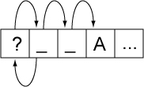

Proposed Update Unicode Standard Annex #29
Unicode Text Segmentation
| Version | Unicode 6.1.0 (draft 4) |
| Editors | Mark Davis (markdavis@google.com) |
| Date | 2011-12-20 |
| This Version | http://www.unicode.org/reports/tr29/tr29-18.html |
| Previous Version | http://www.unicode.org/reports/tr29/tr29-17.html |
| Latest Version | http://www.unicode.org/reports/tr29/ |
| Latest Proposed Update | http://www.unicode.org/reports/tr29/proposed.html |
| Revision | 18 |
Summary
This annex describes guidelines for determining default segmentation boundaries between certain significant text elements: grapheme clusters (“user-perceived characters”), words, and sentences. For line break boundaries, see [UAX14]
Status
This is a draft document which may be updated, replaced, or superseded by other documents at any time. Publication does not imply endorsement by the Unicode Consortium. This is not a stable document; it is inappropriate to cite this document as other than a work in progress.
A Unicode Standard Annex (UAX) forms an integral part of the Unicode Standard, but is published online as a separate document. The Unicode Standard may require conformance to normative content in a Unicode Standard Annex, if so specified in the Conformance chapter of that version of the Unicode Standard. The version number of a UAX document corresponds to the version of the Unicode Standard of which it forms a part.
Please submit corrigenda and other comments with the online reporting form [Feedback]. Related information that is useful in understanding this annex is found in Unicode Standard Annex #41, “Common References for Unicode Standard Annexes.” For the latest version of the Unicode Standard, see [Unicode]. For a list of current Unicode Technical Reports, see [Reports]. For more information about versions of the Unicode Standard, see [Versions]. For any errata which may apply to this annex, see [Errata].
Contents
- 1 Introduction
- 1.1 Notation
- 2 Conformance
- 3 Grapheme Cluster Boundaries
- 4 Word Boundaries
- 5 Sentence Boundaries
- 6 Implementation Notes
- 6.1 Normalization
- 6.2 Replacing Ignore Rules
- 6.3 Regular Expressions
- 6.4 Random Access
- 6.5 Tailoring
- 7 Testing
- 8 Hangul Syllable Boundary Determination
- Acknowledgments
- References
- Modifications
1 Introduction
This annex describes guidelines for determining default boundaries between certain significant text elements: user-perceived characters, words, and sentences. The process of boundary determination is also called segmentation.
A string of Unicode-encoded text often needs to be broken up into text elements programmatically. Common examples of text elements include what users think of as characters, words, lines (more precisely, where line breaks are allowed), and sentences. The precise determination of text elements may vary according to orthographic conventions for a given script or language. The goal of matching user perceptions cannot always be met exactly because the text alone does not always contain enough information to unambiguously decide boundaries. For example, the period (U+002E FULL STOP) is used ambiguously, sometimes for end-of-sentence purposes, sometimes for abbreviations, and sometimes for numbers. In most cases, however, programmatic text boundaries can match user perceptions quite closely, although sometimes the best that can be done is not to surprise the user.
Rather than concentrate on algorithmically searching for text elements (often called segments), a simpler and more useful computation instead detects the boundaries (or breaks) between those text elements. The determination of those boundaries is often critical to performance, so it is important to be able to make such a determination as quickly as possible. (For a general discussion of text elements, see Chapter 2, General Structure, of [Unicode].)
The default boundary determination mechanism specified in this annex provides a straightforward and efficient way to determine some of the most significant boundaries in text: user-perceived characters, words, and sentences. Boundaries used in line breaking (also called word wrapping) are found in [UAX14].
The sheer number of characters in the Unicode Standard, together with its representational power, place requirements on both the specification of text element boundaries and the underlying implementation. The specification needs to allow the designation of large sets of characters sharing the same characteristics (for example, uppercase letters), while the implementation must provide quick access and matches to those large sets. The mechanism also must handle special features of the Unicode Standard, such as nonspacing marks and conjoining jamo.
The default boundary determination builds upon the uniform character representation of the Unicode Standard, while handling the large number of characters and special features such as nonspacing marks and conjoining jamo in an effective manner. As this mechanism lends itself to a completely data-driven implementation, it can be tailored to particular orthographic conventions or user preferences without recoding.
As in other Unicode algorithms, these specifications provide a logical description of the processes: implementations can achieve the same results without using code or data that follows these rules step-by-step. In particular, many production-grade implementations will use a state-table approach. In that case, the performance does not depend on the complexity or number of rules. Rather, performance is only affected by the number of characters that may match after the boundary position in a rule that applies.
1.1 Notation
A boundary specification summarizes boundary property values used in that specification, then lists the rules for boundary determinations in terms of those property values. The summary is provided as a list, where each element of the list is one of the following:
- A literal character
- A range of literal characters
- All characters satisfying a given condition, using properties defined in the Unicode
Character Database [UCD]:
- Non-Boolean property values are given as <property>=<property value>, such as General_Category = Titlecase_Letter.
- Boolean properties are given as <property>=true, such as Uppercase = true.
- Other conditions are specified textually in terms of UCD properties.
- Boolean combinations of the above
- The two special identifiers sot and eot stand for start and end of text, respectively
For example, the following is such a list:
General_Category = Line Separator (Zl), or
General_Category = Paragraph Separator (Zp), or
General_Category = Control (Cc), or
General_Category = Format (Cf)
and not U+000D CARRIAGE RETURN (CR)
and not U+000A LINE FEED (LF)
and not U+200C ZERO WIDTH NON-JOINER (ZWNJ)
and not U+200D ZERO WIDTH JOINER (ZWJ)
In the table assigning the boundary property values, all of the values are intended to be disjoint except for the special value Any. In case of conflict, rows higher in the table have precedence in terms of assigning property values to characters. Data files containing explicit assignments of the property values are found in [Props].
Boundary determination is specified in terms of an ordered list of rules, indicating the status of a boundary position. The rules are numbered for reference and are applied in sequence to determine whether there is a boundary at a given offset. That is, there is an implicit “otherwise” at the front of each rule following the first. The rules are processed from top to bottom. As soon as a rule matches and produces a boundary status (boundary or no boundary) for that offset, the process is terminated.
Each rule consists of a left side, a boundary symbol (see Table 1), and a right side. Either of the sides can be empty. The left and right sides use the boundary property values in regular expressions. The regular expression syntax used is a simplified version of the format supplied in Unicode Technical Standard #18, “Unicode Regular Expressions” [RegEx].
| ÷ | Boundary (allow break here) |
| × | No boundary (do not allow break here) |
| → | Treat whatever on the left side as if it were what is on the right side |
An underscore (“_”) is used to indicate a space in examples.
These rules are constrained in three ways, to make implementations significantly simpler and more efficient. These constraints have not been found to be limitations for natural language use. In particular, the rules are formulated so that they can be efficiently implemented, such as with a deterministic finite-state machine based on a small number of property values.
- Single boundaries. Each rule has exactly one boundary position. This restriction is
more a limitation on the specification methods, because a rule with multiple boundaries could
be expressed instead as multiple rules. For example:
- “a b ÷ c d ÷ e f” could be broken into two rules “a b ÷ c d e f” and “a b c d ÷ e f”
- “a b × c d × e f” could be broken into two rules “a b × c d e f” and “a b c d × e f”
- Ignore degenerates. No special provisions are made to get marginally better behavior for degenerate cases that never occur in practice, such as an A followed by an Indic combining mark.
- Limited negation. Negation of expressions is limited to instances that resolve to a match against single characters, such as “¬(OLetter | Upper | Lower | Sep)”.
2 Conformance
There are many different ways to divide text elements corresponding to user-perceived characters, words, and sentences, and the Unicode Standard does not restrict the ways in which implementations can produce these divisions.
This specification defines default mechanisms; more sophisticated implementations can and should tailor them for particular locales or environments. For example, reliable detection of word break boundaries in languages such as Thai, Lao, Chinese, or Japanese requires the use of dictionary lookup, analogous to English hyphenation. An implementation therefore may need to provide means to override or subclass the default mechanisms described in this annex. Note that tailoring can either add boundary positions or remove boundary positions, compared to the defaults specified here.
Note: Locale-sensitive boundary specifications can be expressed in LDML [UTS35] and be contained in the Unicode Locales project [CLDR]. The repository already contains some tailorings, with more to follow.
To maintain canonical equivalence, all of the following specifications are defined on text normalized in form NFD, as defined in Unicode Standard Annex #15, “Unicode Normalization Forms” [UAX15]. A boundary exists in text not normalized in form NFD if and only if it would occur at the corresponding position in NFD text. However, the default rules have been written to provide equivalent results for non-NFD text and can be applied directly. Even in the case of tailored rules, the requirement to use NFD is only a logical specification; in practice, implementations can avoid normalization and achieve the same results. For more information, see Section 6, Implementation Notes.
3 Grapheme Cluster Boundaries
It is important to recognize that what the user thinks of as a "character"—a basic unit of a writing system for a language—may not be just a single Unicode code point. Instead, that basic unit may be made up of multiple Unicode code points. To avoid ambiguity with the computer use of the term character, this is called a user-perceived character. For example, “G” + acute-accent is a user-perceived character: users think of it as a single character, yet is actually represented by two Unicode code points. These user-perceived characters are approximated by what is called a grapheme cluster, which can be determined programmatically.
Grapheme cluster boundaries are important for collation, regular expressions, UI interactions (such as mouse selection, arrow key movement, backspacing), segmentation for vertical text, identification of boundaries for first-letter styling, and counting “character” positions within text. Word boundaries, line boundaries, and sentence boundaries should not occur within a grapheme cluster: in other words, a grapheme cluster should be an atomic unit with respect to the process of determining these other boundaries.
As far as a user is concerned, the underlying representation of text is not important, but it is important that an editing interface present a uniform implementation of what the user thinks of as characters. Grapheme clusters commonly behave as units in terms of mouse selection, arrow key movement, backspacing, and so on. For example, when a grapheme cluster is represented internally by a character sequence consisting of base character + accent, then using the right arrow key would skip from the start of the base character to the end of the last character of the cluster.
However, in some cases editing a grapheme cluster element by element may be preferable. For example, on a given system the backspace key might delete by code point, while the delete key may delete an entire cluster. Moreover, there is not a one-to-one relationship between grapheme clusters and keys on a keyboard. A single key on a keyboard may correspond to a whole grapheme cluster, a part of a grapheme cluster, or a sequence of more than one grapheme cluster.
In those relatively rare circumstances where programmers need to supply end users with user-perceived character counts, the counts should correspond to the number of segments delimited by grapheme clusters. Grapheme clusters may also be used in searching and matching; for more information, see Unicode Technical Standard #10, “Unicode Collation Algorithm” [UTS10], and Unicode Technical Standard #18, “Unicode Regular Expressions” [UTS18].
The Unicode Standard provides default algorithms for determining grapheme cluster boundaries, with two variants: legacy grapheme clusters and extended grapheme clusters. The most appropriate variant depends on the language and operation involved. However, the extended grapheme cluster boundaries are recommended for general processing, while the legacy grapheme cluster boundaries are maintained primarily for backwards compatibility with earlier versions of this specification.
These algorithms can be adapted to produce tailored grapheme clusters for specific locales or other customizations, such as the contractions used in collation tailoring tables. Below are some examples of the differences between these concepts. The tailored examples are only for illustration: what constitutes a grapheme cluster will depend on the customizations used by the particular tailoring in questions.
Table 1a. Sample Grapheme Clusters
| Ex | Characters | Comments |
|---|---|---|
| Grapheme clusters (both legacy and extended) | ||
| g̈ | U+0067 ( g ) LATIN SMALL LETTER G U+0308 ( ̈ ) COMBINING DIAERESIS |
combining character sequences |
| 각 | U+AC01 ( 각 ) HANGUL SYLLABLE GAG | Hangul syllables such as gag (which may be a single character, or a sequence of combining jamo) |
| U+1100 ( ᄀ ) HANGUL CHOSEONG KIYEOK U+1161 ( ᅡ ) HANGUL JUNGSEONG A U+11A8 ( ᆨ ) HANGUL JONGSEONG KIYEOK |
||
| Extended grapheme clusters | ||
| நி | U+0BA8 ( ந ) TAMIL LETTER NA U+0BBF ( ி ) TAMIL VOWEL SIGN I |
Tamil ni |
| เ | U+0E40 ( เ ) THAI CHARACTER SARA E | Thai e |
| ก | U+0E01 ( ก ) THAI CHARACTER KO KAI | Thai ko |
| กำ | U+0E01 ( ก ) THAI CHARACTER KO KAI U+0E33 ( ำ ) THAI CHARACTER SARA AM |
Thai kam |
| षि | U+0937 ( ष ) DEVANAGARI LETTER SSA U+093F ( ि ) DEVANAGARI VOWEL SIGN I |
Devanagari ssi |
| Legacy grapheme clusters | ||
| ก | U+0E01 ( ก ) THAI CHARACTER KO KAI | Thai ko |
| ำ | U+0E33 ( ำ ) THAI CHARACTER SARA AM | Thai am |
| ष | U+0937 ( ष ) DEVANAGARI LETTER SSA | Devanagari ssa |
| ि | U+093F ( ि ) DEVANAGARI VOWEL SIGN I | Devanagari i |
| Tailored grapheme clusters | ||
| ch | U+0063 ( c ) LATIN SMALL LETTER C U+0068 ( h ) LATIN SMALL LETTER H |
Slovak ch digraph |
| kw | U+006B ( k ) LATIN SMALL LETTER K U+02B7 ( ʷ ) MODIFIER LETTER SMALL W |
sequence with letter modifier |
| क्षि | U+0915 ( क ) DEVANAGARI LETTER KA U+094D ( ् ) DEVANAGARI SIGN VIRAMA U+0937 ( ष ) DEVANAGARI LETTER SSA U+093F ( ि ) DEVANAGARI VOWEL SIGN I |
Devanagari kshi |
See also: Where is my Character?, NamedSequences.txt, and NamedSequencesProv.txt.
A legacy grapheme cluster is defined as a base (such as A or カ) followed by zero or more continuing characters. One way to think of this is as a sequence of characters that form a "stack".
The base can be single characters, or be any sequence of Hangul Jamo characters that form a Hangul Syllable, as defined by D118 in The Unicode Standard.
The continuing characters include
nonspacing marks, plus the Join Controls (U+200C
( ) ZERO WIDTH NON-JOINER and
U+200D ( ) ZERO WIDTH JOINER used in Indic languages, and a few spacing
combining marks to ensure canonical equivalence. Additional cases need to be added for completeness,
so that any string of text can be divided up into a sequence of grapheme clusters. Some of these
may be degenerate cases, such as a control code, or an isolated combining mark.
An extended grapheme cluster is the same as a legacy grapheme cluster, with the addition of some other characters. The continuing characters are extended to include all spacing combining marks, such as the spacing (but dependent) vowel signs in Indic scripts, as continuing characters. For example, this includes U+093F (ि) DEVANAGARI VOWEL SIGN I. The extended grapheme clusters should be used in implementations in preference to legacy grapheme clusters, because they provide better results for Indic scripts such as Tamil or Devanagari in which editing by orthographic syllable is typically preferred. For scripts such as Thai, Lao, and certain other southeast Asian scripts, editing by visual unit is typically preferred, so for those scripts the behavior of extended grapheme clusters is similar to (but not identical to) the behavior of legacy grapheme clusters. The definition also includes certain visual order Thai and Lao vowels that may come before the base. The extended grapheme clusters should be used in implementations in preference to legacy grapheme clusters, because they provide better results for Indic scripts such as Tamil or Devanagari, and for Southeast Asian scripts such as Thai and Lao.
For the rules defining the boundaries for grapheme clusters, see Table 2. For more information on the composition of Hangul syllables, see Chapter 3, Conformance, of [Unicode].
Note: The boundary between default Unicode grapheme clusters can be determined by just the two adjacent characters. See Section 7, Testing, for a chart showing the interactions of pairs of characters.
A key feature of default Unicode grapheme clusters (both legacy and extended) is that they remain unchanged across all canonically equivalent forms of the underlying text. Thus the boundaries remain unchanged whether the text is in NFC or NFD. Using a grapheme cluster as the fundamental unit of matching thus provides a very clear and easily explained basis for canonically equivalent matching. This is important for applications from searching to regular expressions.
Another key feature is that default Unicode grapheme clusters are atomic units with respect to the process of determining the Unicode default line, word, and sentence boundaries.
Grapheme clusters can be tailored to meet further requirements. Such tailoring is permitted, but the possible rules are outside of the scope of this document. One example of such a tailoring would be for the aksaras, or orthographic syllables, used in many Indic scripts. Aksaras usually consist of a consonant, sometimes with an inherent vowel and sometimes followed by an explicit, dependent vowel whose rendering may end up on any side of the consonant letter base. Extended grapheme clusters include such simple combinations.
However, aksaras may also include one or more additional prefixed consonants, typically with a virama (halant) character between each consonant in the sequence. Such consonant cluster aksaras are not incorporated into the default rules for extended grapheme clusters, in part because not all such sequences are considered to be single "characters" by users. Indic scripts vary considerably in how they handle the rendering of such aksaras—in some cases stacking them up into combined forms known as consonant conjuncts, and in other cases stringing them out horizontally, with visible renditions of the halant on each consonant in the sequence. There is even greater variability in how the typical liquid consonants (or "medials"), ya, ra, la, and wa, are handled for display in combinations in aksaras. So tailorings for aksaras may need to be script-, language-, font-, or context-specific to be useful.
Note: Font-based information may be required to determine the appropriate unit to use for UI purposes, such as identification of boundaries for first-letter paragraph styling. For example, such a unit could be a ligature formed of two grapheme clusters, such as لا (Arabic lam + alef).
The Unicode definitions of grapheme clusters are defaults: not meant to exclude the use of more sophisticated definitions of tailored grapheme clusters where appropriate. Such definitions may more precisely match the user expectations within individual languages for given processes. For example, “ch” may be considered a grapheme cluster in Slovak, for processes such as collation. The default definitions are, however, designed to provide a much more accurate match to overall user expectations for what the user perceives of as characters than is provided by individual Unicode code points.
Note: The default Unicode grapheme clusters were previously referred to as “locale-independent graphemes.” The term cluster is used to emphasize that the term grapheme is used differently in linguistics. For simplicity and to align terminology with Unicode Technical Standard #10, “Unicode Collation Algorithm” [UTS10], the terms default and tailored are preferred over locale-independent and locale-dependent, respectively.
Display of Grapheme Clusters. Grapheme clusters are not the same as ligatures. For example, the grapheme cluster “ch” in Slovak is not normally a ligature and, conversely, the ligature “fi” is not a grapheme cluster. Default grapheme clusters do not necessarily reflect text display. For example, the sequence <f, i> may be displayed as a single glyph on the screen, but would still be two grapheme clusters.
For information on the matching of grapheme clusters with regular expressions, see Unicode Technical Standard #18, “Unicode Regular Expressions” [UTS18].
Degenerate Cases. The default specifications are designed to be simple to implement, and provide an algorithmic determination of grapheme clusters. However, they do not have to cover edge cases that will not occur in practice. For the purpose of segmentation, they may also include degenerate cases that are not thought of as grapheme clusters, such as an isolated control character or combining mark. In this, they differ from the combining character sequences and extended combining character sequences defined in [Unicode]. In addition, Unassigned (Cn) and Private Use (Co) characters are given property values that anticipate potential usage.
For comparison, Table 1b shows the relationship between combining character sequences and grapheme clusters, using regex notation. Note that given alternates (X|Y), the first match is taken.
Table 1b. Combining character sequences and grapheme clusters
| Term | Regex | Notes |
|---|---|---|
| combining character sequence | base? ( Mark | ZWJ | ZWNJ )+ |
A single base character is not a combining character sequence. However, a single combining mark is a (degenerate) combining character sequence. |
| extended combining character sequence | extended_base? ( Mark | ZWJ | ZWNJ )+ |
extended_base includes Hangul Syllables |
| legacy grapheme cluster | ( CRLF |
A single base character is a grapheme cluster. Degenerate cases include any isolated non-base characters, and non-base characters like controls. |
| extended grapheme cluster | ( CRLF |
Extended grapheme clusters add prepending and spacing marks |
3.1 Default Grapheme Cluster Boundary Specification
The Grapheme_Cluster_Break property value assignments are explicitly listed in the corresponding data file in [Props]. The values in that file are the normative property values.
For illustration, property values are summarized in Table 2, but the lists of characters are illustrative.
Table 2. Grapheme_Cluster_Break Property Values
| Value | Summary List of Characters |
|---|---|
| CR | U+000D CARRIAGE RETURN (CR) |
| LF | U+000A LINE FEED (LF) |
| Control | General_Category = Line Separator (Zl), or General_Category = Paragraph Separator (Zp), or General_Category = Control (Cc), or General_Category = Control (Cn) and Default_Ignorable_Code_Point (DI), or General_Category = Control (Cs), or General_Category = Format (Cf) and not U+000D CARRIAGE RETURN (CR) and not U+000A LINE FEED (LF) and not U+200C ZERO WIDTH NON-JOINER (ZWNJ) and not U+200D ZERO WIDTH JOINER (ZWJ) |
| Extend | Grapheme_Extend = true This includes: General_Category = Nonspacing_Mark General_Category = Enclosing_Mark U+200C ZERO WIDTH NON-JOINER U+200D ZERO WIDTH JOINER plus a few Spacing Marks needed for canonical equivalence. |
| Prepend | (Currently there are no characters with this value) |
| SpacingMark | Grapheme_Cluster_Break ≠ Extend, and General_Category = Spacing Mark, or any of the following (which have General_Category = Other Letter): U+0E30 ( ะ ) THAI CHARACTER SARA A U+0E32 ( า ) THAI CHARACTER SARA AA U+0E33 ( ำ ) THAI CHARACTER SARA AM U+0E45 ( ๅ ) THAI CHARACTER LAKKHANGYAO U+0EB0 ( ະ ) LAO VOWEL SIGN A U+0EB2 ( າ ) LAO VOWEL SIGN AA U+0EB3 ( ຳ ) LAO VOWEL SIGN AM Exceptions: The following (which have General_Category = Spacing Mark and would otherwise be included) are specifically excluded: U+102B ( ါ ) MYANMAR VOWEL SIGN TALL AA U+102C ( ာ ) MYANMAR VOWEL SIGN AA U+1038 ( း ) MYANMAR SIGN VISARGA U+1062 ( ၢ ) MYANMAR VOWEL SIGN SGAW KAREN EU ..U+1064 ( ၤ ) MYANMAR TONE MARK SGAW KAREN KE PHO U+1067 ( ၧ ) MYANMAR VOWEL SIGN WESTERN PWO KAREN EU ..U+106D ( ၭ ) MYANMAR SIGN WESTERN PWO KAREN TONE-5 U+1083 ( ႃ ) MYANMAR VOWEL SIGN SHAN AA U+1087 ( ႇ ) MYANMAR SIGN SHAN TONE-2 ..U+108C ( ႌ ) MYANMAR SIGN SHAN COUNCIL TONE-3 U+108F ( ႏ ) MYANMAR SIGN RUMAI PALAUNG TONE-5 U+109A ( ႚ ) MYANMAR SIGN KHAMTI TONE-1 ..U+109C ( ႜ ) MYANMAR VOWEL SIGN AITON A U+19B0 ( ᦰ ) NEW TAI LUE VOWEL SIGN VOWEL SHORTENER ..U+19B4 ( ᦴ ) NEW TAI LUE VOWEL SIGN UU U+19B8 ( ᦸ ) NEW TAI LUE VOWEL SIGN OA U+19B9 ( ᦹ ) NEW TAI LUE VOWEL SIGN UE U+19BB ( ᦻ ) NEW TAI LUE VOWEL SIGN AAY ..U+19C0 ( ᧀ ) NEW TAI LUE VOWEL SIGN IY U+19C8 ( ᧈ ) NEW TAI LUE TONE MARK-1 U+19C9 ( ᧉ ) NEW TAI LUE TONE MARK-2 U+1A61 ( ᩡ ) TAI THAM VOWEL SIGN A U+1A63 ( ᩣ ) TAI THAM VOWEL SIGN AA U+1A64 ( ᩤ ) TAI THAM VOWEL SIGN TALL AA U+AA7B ( ꩻ ) MYANMAR SIGN PAO KAREN TONE |
| L | Hangul_Syllable_Type=L, that is: U+1100 ( ᄀ ) HANGUL CHOSEONG KIYEOK ..U+115F ( ᅟ ) HANGUL CHOSEONG FILLER U+A960 ( ꥠ ) HANGUL CHOSEONG TIKEUT-MIEUM ..U+A97C ( ꥼ ) HANGUL CHOSEONG SSANGYEORINHIEUH |
| V | Hangul_Syllable_Type=V, that is: U+1160 ( ᅠ ) HANGUL JUNGSEONG FILLER ..U+11A2 ( ᆢ ) HANGUL JUNGSEONG SSANGARAEA U+D7B0 ( ힰ ) HANGUL JUNGSEONG O-YEO ..U+D7C6 ( ퟆ ) HANGUL JUNGSEONG ARAEA-E |
| T | Hangul_Syllable_Type=T, that is: U+11A8 ( ᆨ ) HANGUL JONGSEONG KIYEOK ..U+11F9 ( ᇹ ) HANGUL JONGSEONG YEORINHIEUH U+D7CB ( ퟋ ) HANGUL JONGSEONG NIEUN-RIEUL ..U+D7FB ( ퟻ ) HANGUL JONGSEONG PHIEUPH-THIEUTH |
| LV | Hangul_Syllable_Type=LV, that is: U+AC00 (가) HANGUL SYLLABLE GA U+AC1C (개) HANGUL SYLLABLE GAE U+AC38 (갸) HANGUL SYLLABLE GYA ... |
| LVT | Hangul_Syllable_Type=LVT, that is: U+AC01 (각) HANGUL SYLLABLE GAG U+AC02 (갂) HANGUL SYLLABLE GAGG U+AC03 (갃) HANGUL SYLLABLE GAGS U+AC04 (간) HANGUL SYLLABLE GAN ... |
| Any | This is not a property value; it is used in the rules to represent any code point. |
Grapheme Cluster Boundary Rules
The same rules are used for the Unicode specification of boundaries for both legacy grapheme clusters and extended grapheme clusters, with one exception. The extended grapheme clusters add rules GB9a and GB9b, while the legacy grapheme clusters omit it.
When citing the Unicode definition of grapheme clusters, it must be clear which of the two alternatives are being specified: extended versus legacy.
|
Break at the start and end of text. |
|||
| GB1. | sot | ÷ | |
| GB2. | ÷ | eot | |
|
Do not break between a CR and LF. Otherwise, break before and after controls. |
|||
| GB3. | CR | × | LF |
| GB4. | ( Control | CR | LF ) | ÷ | |
| GB5. | ÷ | ( Control | CR | LF ) | |
|
Do not break Hangul syllable sequences. |
|||
| GB6. | L | × | ( L | V | LV | LVT ) |
| GB7. | ( LV | V ) | × | ( V | T ) |
| GB8. | ( LVT | T) | × | T |
|
Do not break before extending characters. |
|||
| GB9. | × | Extend | |
|
Only for
extended grapheme clusters: |
|||
| GB9a. | × | SpacingMark | |
| GB9b. | Prepend | × | |
|
Otherwise, break everywhere. |
|||
| GB10. | Any | ÷ | Any |
Notes:
- Grapheme Cluster Boundaries can be easily tested by looking at immediately adjacent characters. They can also be transformed into simple regular expressions, as well. For more information, see Section 6.3 Regular Expressions.
- Even where the legacy grapheme clusters are used, it may be useful to tailor Thai and Lao to add U+0E33 ( ำ ) THAI CHARACTER SARA AM and U+0EB3 ( ຳ ) LAO VOWEL SIGN AM to the Extend type.
- A tailoring for basic aksara support would add a rule of the form Virama × Base before GB10, where Virama and Base matched the appropriate characters for the Indic language in question. Typically the behavior of grapheme clusters does not matter for ill-formed text, so the Virama and Base types can be set to broader categories without problem, such as \p{ccc:virama} and \p{gc:letter}, respectively.
- The Grapheme_Base and Grapheme_Extend properties predated the development of the Grapheme_Cluster_Break property. The set of characters with Grapheme_Extend=Yes is the same as the set of characters with Grapheme_Cluster_Break=Extend. However, the Grapheme_Base property proved to be insufficient for determining grapheme cluster boundaries. Grapheme_Base is no longer used by this specification.
4 Word Boundaries
Word boundaries are used in a number of different contexts. The most familiar ones are selection (double-click mouse selection or “move to next word” control-arrow keys) and the dialog option “Whole Word Search” for search and replace. They are also used in database queries, to determine whether elements are within a certain number of words of one another. Searching may also use word boundaries in determining matching items. Word break boundaries are not restricted to whitespace and punctuation. Indeed, some languages do not use spaces at all.
Word boundaries can also be used in intelligent cut and paste. With this feature, if the user cuts a selection of text on word boundaries, adjacent spaces are collapsed to a single space. For example, cutting “quick” from “The_quick_fox” would leave “The_ _fox”. Intelligent cut and paste collapses this text to “The_fox”. Figure 1 gives an example of word boundaries.
There is a boundary, for example, on either side of the word brown. These are the boundaries that users would expect, for example, if they chose Whole Word Search. Matching brown with Whole Word Search works because there is a boundary on either side. Matching brow does not. Matching “brown” also works because there are boundaries between the parentheses and the quotation marks.
Proximity tests in searching determines whether, for example, “quick” is within three words of “fox”. That is done with the above boundaries by ignoring any words that do not contain a letter, as in Figure 2. Thus, for proximity, “fox” is within three words of “quick”. This same technique can be used for “get next/previous word” commands or keyboard arrow keys. Letters are not the only characters that can be used to determine the “significant” words; different implementations may include other types of characters such as digits or perform other analysis of the characters.
Word boundaries are related to line boundaries, but are distinct: there are some word break boundaries that are not line break boundaries, and vice versa. A line break boundary is usually a word break boundary, but there are exceptions such as a word containing a SHY (soft hyphen): it will break across lines, yet is a single word.
As with the other default specifications, implementations may override (tailor) the results to meet the requirements of different environments or particular languages. For some languages, it may also be necessary to have different tailored word break rules for selection versus Whole Word Search.
In particular, the characters with the Line_Break property values of Contingent_Break (CB), Complex_Context (SA/South East Asian), and XX (Unknown) are assigned word boundary property values based on criteria outside of the scope of this annex. That means that satisfactory treatment of languages like Chinese or Thai requires special handling.
4.1 Default Word Boundary Specification
The Word_Break property value assignments are explicitly listed in the corresponding data file in [Props]. The values in that file are the normative property values.
For illustration, property values are summarized in Table 3, but the lists of characters are illustrative.
Table 3. Word_Break Property Values
| Value | Summary List of Characters |
|---|---|
| CR | U+000D CARRIAGE RETURN (CR) |
| LF | U+000A LINE FEED (LF) |
| Newline |
U+000B LINE TABULATION U+000C FORM FEED (FF) U+0085 NEXT LINE (NEL) U+2028 LINE SEPARATOR U+2029 PARAGRAPH SEPARATOR |
| Extend |
Grapheme_Extend = true, or General_Category = Spacing Mark |
| Format | General_Category = Format (Cf) and not U+200B ZERO WIDTH SPACE (ZWSP) and not U+200C ZERO WIDTH NON-JOINER (ZWNJ) and not U+200D ZERO WIDTH JOINER (ZWJ) |
| Katakana | Script = KATAKANA, or any of the following: U+3031 (〱) VERTICAL KANA REPEAT MARK U+3032 (〲) VERTICAL KANA REPEAT WITH VOICED SOUND MARK U+3033 (〳) VERTICAL KANA REPEAT MARK UPPER HALF U+3034 (〴) VERTICAL KANA REPEAT WITH VOICED SOUND MARK UPPER HALF U+3035 (〵) VERTICAL KANA REPEAT MARK LOWER HALF U+309B (゛) KATAKANA-HIRAGANA VOICED SOUND MARK U+309C (゜) KATAKANA-HIRAGANA SEMI-VOICED SOUND MARK U+30A0 (゠) KATAKANA-HIRAGANA DOUBLE HYPHEN U+30FC (ー) KATAKANA-HIRAGANA PROLONGED SOUND MARK U+FF70 (ｰ) HALFWIDTH KATAKANA-HIRAGANA PROLONGED SOUND MARK |
| ALetter | Alphabetic = true, or U+05F3 (׳) HEBREW PUNCTUATION GERESH and Ideographic = false and Word_Break ≠ Katakana and LineBreak ≠ Complex_Context (SA) and Script ≠ Hiragana and Word_Break ≠ Extend |
| MidNumLet | U+0027 ( ' ) APOSTROPHE U+002E ( . ) FULL STOP U+2018 ( ' ) LEFT SINGLE QUOTATION MARK U+2019 ( ' ) RIGHT SINGLE QUOTATION MARK U+2024 ( ․ ) ONE DOT LEADER U+FE52 ( ﹒ ) SMALL FULL STOP U+FF07 ( ＇ ) FULLWIDTH APOSTROPHE U+FF0E ( ． ) FULLWIDTH FULL STOP |
| MidLetter | Any of the following: U+00B7 ( · ) MIDDLE DOT U+05F4 ( ״ ) HEBREW PUNCTUATION GERSHAYIM U+2027 ( ‧ ) HYPHENATION POINT U+003A ( : ) COLON (used in Swedish) U+0387 ( · ) GREEK ANO TELEIA U+FE13 ( ︓ ) PRESENTATION FORM FOR VERTICAL COLON U+FE55 ( ﹕ ) SMALL COLON U+FF1A ( ： ) FULLWIDTH COLON |
| MidNum | Line_Break = Infix_Numeric, or any of the following: U+066C ( ٬ ) ARABIC THOUSANDS SEPARATOR U+FE50 ( ﹐ ) SMALL COMMA U+FE54 ( ﹔ ) SMALL SEMICOLON U+FF0C ( ， ) FULLWIDTH COMMA U+FF1B ( ； ) FULLWIDTH SEMICOLON and not U+003A ( : ) COLON and not U+FE13 ( ︓ ) PRESENTATION FORM FOR VERTICAL COLON and not U+002E ( . ) FULL STOP |
| Numeric | Line_Break = Numeric and not U+066C ( ٬ ) ARABIC THOUSANDS SEPARATOR |
| ExtendNumLet | General_Category = Connector_Punctuation |
| Any | This is not a property value; it is used in the rules to represent any code point. |
Word Boundary Rules
|
Break at the start and end of text. |
|||
| WB1. | sot | ÷ | |
| WB2. | ÷ | eot | |
|
Do not break within CRLF. |
|||
| WB3. | CR | × | LF |
|
Otherwise break before and after Newlines (including CR and LF) |
|||
| WB3a. | (Newline | CR | LF) | ÷ | |
| WB3b. | ÷ | (Newline | CR | LF) | |
|
Ignore Format and Extend characters, except when they appear at the beginning of a region of
text. |
|||
| WB4. | X (Extend | Format)* | → | X |
|
Do not break between most letters. |
|||
| WB5. | ALetter | × | ALetter |
|
Do not break letters across certain punctuation. |
|||
| WB6. | ALetter | × | (MidLetter | MidNumLet) ALetter |
| WB7. | ALetter (MidLetter | MidNumLet) | × | ALetter |
|
Do not break within sequences of digits, or digits adjacent to letters (“3a”, or “A3”). |
|||
| WB8. | Numeric | × | Numeric |
| WB9. | ALetter | × | Numeric |
| WB10. | Numeric | × | ALetter |
|
Do not break within sequences, such as “3.2” or “3,456.789”. |
|||
| WB11. | Numeric (MidNum | MidNumLet) | × | Numeric |
| WB12. | Numeric | × | (MidNum | MidNumLet) Numeric |
|
Do not break between Katakana. |
|||
| WB13. | Katakana | × | Katakana |
|
Do not break from extenders. |
|||
| WB13a. | (ALetter | Numeric | Katakana | ExtendNumLet) | × | ExtendNumLet |
| WB13b. | ExtendNumLet | × | (ALetter | Numeric | Katakana) |
|
Otherwise, break everywhere (including around ideographs). |
|||
| WB14. | Any | ÷ | Any |
Notes:
-
It is not possible to provide a uniform set of rules that resolves all issues across languages or that handles all ambiguous situations within a given language. The goal for the specification presented in this annex is to provide a workable default; tailored implementations can be more sophisticated.
-
For Thai, Lao, Khmer, Myanmar, and other scripts that do not use typically use spaces between words, a good implementation should not depend on the default word boundary specification. It should use a more sophisticated mechanism, as is also required for line breaking. Ideographic scripts such as Japanese and Chinese are even more complex. Where Hangul text is written without spaces, the same applies. However, in the absence of a more sophisticated mechanism, the rules specified in this annex supply a well-defined default.
-
The correct interpretation of hyphens in the context of word boundaries is challenging. It is quite common for separate words to be connected with a hyphen: “out-of-the-box,” “under-the-table,” “Italian-American,” and so on. A significant number are hyphenated names, such as “Smith-Hawkins.” When doing a Whole Word Search or query, users expect to find the word within those hyphens. While there are some cases where they are separate words (usually to resolve some ambiguity such as “re-sort” as opposed to “resort”), it is better overall to keep the hyphen out of the default definition. Hyphens include U+002D HYPHEN-MINUS, U+2010 HYPHEN, possibly also U+058A ( ֊ ) ARMENIAN HYPHEN, and U+30A0 KATAKANA-HIRAGANA DOUBLE HYPHEN.
-
Implementations may build on the information supplied by word boundaries. For example, a spell-checker would first check that each word was valid according to the above definition, checking the four words in “out-of-the-box.” If any of the words failed, it could build the compound word and check if it as a whole sequence was in the dictionary (even if all the components were not in the dictionary), such as with “re-iterate.” Of course, spell-checkers for highly inflected or agglutinative languages will need much more sophisticated algorithms.
-
The use of the apostrophe is ambiguous. It is usually considered part of one word (“can’t” or “aujourd’hui”) but it may also be considered as part of two words (“l’objectif”). A further complication is the use of the same character as an apostrophe and as a quotation mark. Therefore leading or trailing apostrophes are best excluded from the default definition of a word. In some languages, such as French and Italian, tailoring to break words when the character after the apostrophe is a vowel may yield better results in more cases. This can be done by adding a rule WB5a.
Break between apostrophe and vowels (French, Italian).
WB5a. apostrophe ÷ vowels and defining appropriate property values for apostrophe and vowels. Apostrophe includes U+0027 (') APOSTROPHE and U+2019 (’) RIGHT SINGLE QUOTATION MARK (curly apostrophe). Finally, in some transliteration schemes, apostrophe is used at the beginning of words, requiring special tailoring.
-
To allow acronyms like “U.S.A.”, a tailoring may include U+002E FULL STOP in ExtendNumLet.
-
Certain cases such as colons in words (c:a) are included in the default even though they may be specific to relatively small user communities (Swedish) because they do not occur otherwise, in normal text, and so do not cause a problem for other languages.
-
For Hebrew, a tailoring may include a double quotation mark between letters, because legacy data may contain that in place of U+05F4 (״) gershayim. This can be done by adding double quotation mark to MidLetter. U+05F3 (׳) HEBREW PUNCTUATION GERESH may also be included in a tailoring.
-
Format characters are included if they are not initial. Thus <LRM><ALetter> will break before the <letter>, but there is no break in <ALetter><LRM><ALetter> or <ALetter><LRM>.
-
Characters such as hyphens, apostrophes, quotation marks, and colon should be taken into account when using identifiers that are intended to represent words of one or more natural languages. See Section 2.4, Specific Character Adjustments, of [UAX31]. Treatment of hyphens, in particular, may be different in the case of processing identifiers than when using word break analysis for a Whole Word Search or query, because when handling identifiers the goal will be to parse maximal units corresponding to natural language “words,” rather than to find smaller word units within longer lexical units connected by hyphens.
-
Normally word breaking does not require breaking between different scripts. However, adding that capability may be useful in combination with other extensions of word segmentation. For example, in Korean the sentence "I live in Chicago." is written as three segments delimited by spaces:
- 나는 Chicago에 산다.
According to Korean standards, the grammatical suffixes, such as '에' meaning 'in', are considered separate words. Thus the above sentence would be broken into the following five words:
- 나, 는, Chicago, 에, and 산다.
Separating the first two words requires a dictionary lookup, but for Latin text ("Chicago") the separation is trivial based on the script boundary.
- Modifier letters (Lm) are almost all included in the ALetter class, by virtue of their Alphabetic property value. Thus, by default, modifier letters do not cause word breaks and should be included in word selections. Modifier symbols (Sk) are not in the ALetter class and so do cause word breaks by default.
- Some or all of the following characters may be tailored to be in MidLetter, depending on the environment:
- U+002D ( - ) HYPHEN-MINUS
U+055A ( ՚ ) ARMENIAN APOSTROPHE
U+058A ( ֊ ) ARMENIAN HYPHEN
U+0F0B ( ་ ) TIBETAN MARK INTERSYLLABIC TSHEG
U+1806 ( ᠆ ) MONGOLIAN TODO SOFT HYPHEN
U+2010 ( ‐ ) HYPHEN
U+2011 ( ‑ ) NON-BREAKING HYPHEN
U+201B ( ‛ ) SINGLE HIGH-REVERSED-9 QUOTATION MARK
U+30A0 ( ゠ ) KATAKANA-HIRAGANA DOUBLE HYPHEN
U+30FB ( ・ ) KATAKANA MIDDLE DOT
U+FE63 ( ﹣ ) SMALL HYPHEN-MINUS
U+FF0D ( － ) FULLWIDTH HYPHEN-MINUS - In UnicodeSet notation, this is: [\u002D\uFF0D\uFE63\u058A\u1806\u2010\u2011\u30A0\u30FB\u201B\u055A\u0F0B]
- For example, some writing systems use a hyphen character between syllables within a word. An example is the Iu Mien language written with the Thai script. Such words should behave as single words for the purpose of selection ("double-click"), indexing, and so forth, meaning that they should not word-break on the hyphen.
- U+002D ( - ) HYPHEN-MINUS
-
Some or all of the following characters may be tailored to be in MidNum, depending on the environment, to allow for
languages that use spaces as thousands separators, such as €1 234,56.
- U+0020 ( ) SPACE
U+00A0 ( ) NO-BREAK SPACE
U+2007 ( ) FIGURE SPACE
U+2008 ( ) PUNCTUATION SPACE
U+2009 ( ) THIN SPACE
U+202F ( ) NARROW NO-BREAK SPACE - In UnicodeSet notation, this is: [\u0020\u00A0\u2007\u2008\u2009\u202F]
- U+0020 ( ) SPACE
4.2 Name Validation
Related to word determination is the issue of personal name validation. Implementations sometimes need to validate fields in which personal names are entered. The goal is to distinguish between characters like those in "James Smith-Faley, Jr." and those in "!#@♥≠". It is important to be reasonably lenient, because users need to be able to add legitimate names, like "di Silva", even if the names contain characters such as space. Typically, these personal name validations should not be language-specific; someone might be using a Web site in one language while his name is in a different language, for example. A basic set of name validation characters consists the characters allowed in words according to the above definition, plus a number of exceptional characters:
Basic Name Validation Characters
This is only a basic set of validation characters; in particular, the following points should be kept in mind:
- It is a lenient, non-language-specific set, and could be tailored where only a limited set of languages are permitted, or for other environments. For example, the set can be narrowed if name fields are separated: "," and "." may not be necessary if titles are not allowed.
- It includes characters that may not be appropriate for identifiers, and some that would not be parts of words. It also permits some characters that may be part of words in a broad sense, but not part of names, such as in "c:a" in Swedish, or hyphenation points used in dictionary words.
- Additional tests may be needed in cases where security is at issue. In particular, names may be validated by transforming them to NFC format, and then testing to ensure that no characters in the result of the transformation change under NFKC. A second test is to use the information in Table 5. Recommended Scripts in Unicode Identifier and Pattern Syntax [UAX31]. If the name has one or more characters with explicit script values that are not in Table 5, then reject the name.
5 Sentence Boundaries
Sentence boundaries are often used for triple-click or some other method of selecting or iterating through blocks of text that are larger than single words. They are also used to determine whether words occur within the same sentence in database queries.
Plain text provides inadequate information for determining good sentence boundaries. Periods can signal the end of a sentence, indicate abbreviations, or be used for decimal points, for example. Without much more sophisticated analysis, one cannot distinguish between the two following examples of the sequence <?, ”, space, uppercase-letter>. In the first example, they mark the end of a sentence, while in the second they do not.
He said, “Are you going?” John shook his head.
“Are you going?” John asked.
Without analyzing the text semantically, it is impossible to be certain which of these usages is intended (and sometimes ambiguities still remain). However, in most cases a straightforward mechanism works well.
Note: As with the other default specifications, implementations are free to override (tailor) the results to meet the requirements of different environments or particular languages.
5.1 Default Sentence Boundary Specification
The Sentence_Break property value assignments are explicitly listed in the corresponding data file in [Props]. The values in that file are the normative property values.
For illustration, property values are summarized in Table 4, but the lists of characters are illustrative.
Table 4. Sentence_Break Property Values
| Value | Summary List of Characters |
|---|---|
| CR | U+000D CARRIAGE RETURN (CR) |
| LF | U+000A LINE FEED (LF) |
| Extend |
Grapheme_Extend = true, or General_Category = Spacing Mark |
| Sep | Any of the following characters: U+0085 NEXT LINE (NEL) U+2028 LINE SEPARATOR (LS) U+2029 PARAGRAPH SEPARATOR (PS) |
| Format | General_Category = Format (Cf) and not U+200C ZERO WIDTH NON-JOINER (ZWNJ) and not U+200D ZERO WIDTH JOINER (ZWJ) |
| Sp | Whitespace = true and Sentence_Break ≠ Sep and Sentence_Break ≠ CR and Sentence_Break ≠ LF |
| Lower | Lowercase = true and GRAPHEME EXTEND = false |
| Upper | General_Category = Titlecase_Letter (Lt), or Uppercase = true |
| OLetter | Alphabetic = true, or U+00A0 ( ) NO-BREAK SPACE (NBSP), or U+05F3 (׳) HEBREW PUNCTUATION GERESH and Lower = false and Upper = false and Sentence_Break ≠ Extend |
| Numeric | Linebreak = Numeric (NU) |
| ATerm | U+002E (.)
FULL STOP U+2024 ( ․ ) ONE DOT LEADER U+FE52 ( ﹒ ) SMALL FULL STOP U+FF0E ( ． ) FULLWIDTH FULL STOP |
| SContinue | U+002C ( , ) COMMA U+002D ( - ) HYPHEN-MINUS U+003A ( : ) COLON U+055D ( ՝ ) ARMENIAN COMMA U+060C ( ، ) ARABIC COMMA U+060D ( ؍ ) ARABIC DATE SEPARATOR U+07F8 ( ߸ ) NKO COMMA U+1802 ( ᠂ ) MONGOLIAN COMMA U+1808 ( ᠈ ) MONGOLIAN MANCHU COMMA U+2013 ( – ) EN DASH U+2014 ( — ) EM DASH U+3001 ( 、 ) IDEOGRAPHIC COMMA U+FE10 ( ︐ ) PRESENTATION FORM FOR VERTICAL COMMA U+FE11 ( ︑ ) PRESENTATION FORM FOR VERTICAL IDEOGRAPHIC COMMA U+FE13 ( ︓ ) PRESENTATION FORM FOR VERTICAL COLON U+FE31 ( ︱ ) PRESENTATION FORM FOR VERTICAL EM DASH U+FE32 ( ︲ ) PRESENTATION FORM FOR VERTICAL EN DASH U+FE50 ( ﹐ ) SMALL COMMA U+FE51 ( ﹑ ) SMALL IDEOGRAPHIC COMMA U+FE55 ( ﹕ ) SMALL COLON U+FE58 ( ﹘ ) SMALL EM DASH U+FE63 ( ﹣ ) SMALL HYPHEN-MINUS U+FF0C ( ， ) FULLWIDTH COMMA U+FF0D ( － ) FULLWIDTH HYPHEN-MINUS U+FF1A ( ： ) FULLWIDTH COLON U+FF64 ( ､ ) HALFWIDTH IDEOGRAPHIC COMMA |
| STerm | STerm = true |
| Close | General_Category = Open_Punctuation (Po), or General_Category = Close_Punctuation (Pe), or Linebreak = Quotation (QU) and not U+05F3 ( ׳ ) HEBREW PUNCTUATION GERESH and ATerm = false and STerm = false |
| Any | This is not a property value; it is used in the rules to represent any code point. |
Sentence Boundary Rules
|
Break at the start and end of text. |
|||
| SB1. | sot | ÷ | |
| SB2. | ÷ | eot | |
|
Do not break within CRLF. |
|||
| SB3. | CR | × | LF |
|
Break after paragraph separators. |
|||
| SB4. | Sep | CR | LF | ÷ | |
|
Ignore Format and Extend characters, except when they appear at the beginning of a region of text. (See Section 6.2, Replacing Ignore Rules.) |
|||
| SB5. | X (Extend | Format)* | → | X |
|
Do not break after ambiguous terminators like period, if they are immediately followed by a number or lowercase letter, if they are between uppercase letters, if the first following letter (optionally after certain punctuation) is lowercase, or if they are followed by “continuation” punctuation such as comma, colon, or semicolon. For example, a period may be an abbreviation or numeric period, and thus may not mark the end of a sentence. |
|||
| SB6. | ATerm | × | Numeric |
| SB7. | Upper ATerm | × | Upper |
| SB8. | ATerm Close* Sp* | × | ( ¬(OLetter | Upper | Lower | Sep | CR | LF | STerm | ATerm) )* Lower |
| SB8a. | (STerm | ATerm) Close* Sp* | × | (SContinue | STerm | ATerm) |
|
Break after sentence terminators, but include closing punctuation, trailing spaces, and a paragraph separator (if present). [See note below.] |
|||
| SB9. | ( STerm | ATerm ) Close* | × | ( Close | Sp | Sep | CR | LF ) |
| SB10. | ( STerm | ATerm ) Close* Sp* | × | ( Sp | Sep | CR | LF ) |
| SB11. | ( STerm | ATerm ) Close* Sp* ( Sep | CR | LF )? | ÷ | |
|
Otherwise, do not break. |
|||
| SB12. | Any | × | Any |
Notes:
-
Rules SB6-8 are designed to forbid breaks within strings such as
c.d 3.4 U.S. ... the resp. leaders are ... ... etc.)’ ‘(the ... They permit breaks in strings such as
She said “See spot run.” John shook his head. ... ... etc. 它们指... ...理数字. 它们指... They cannot detect cases such as “...Mr. Jones...”; more sophisticated tailoring would be required to detect such cases.
- Rules SB9-11 are designed to allow breaks after sequences of the
following form, but not within them:
- ( STerm | ATerm ) Close* Sp* ( Sep | CR | LF )?
6 Implementation Notes
6.1 Normalization
The boundary specifications are stated in terms of text normalized according to Normalization Form NFD (see Unicode Standard Annex #15, “Unicode Normalization Forms” [UAX15]). In practice, normalization of the input is not required. To ensure that the same results are returned for canonically equivalent text (that is, the same boundary positions will be found, although those may be represented by different offsets), the grapheme cluster boundary specification has the following features:
- There is never a break within a sequence of nonspacing marks.
- There is never a break between a base character and subsequent nonspacing marks.
The specification also avoids certain problems by explicitly assigning the Extend property value to certain characters, such as U+09BE (া) BENGALI VOWEL SIGN AA, to deal with particular compositions.
The other default boundary specifications never break within grapheme clusters, and they always use a consistent property value for each grapheme cluster as a whole.
6.2 Replacing Ignore Rules
An important rule for the default word and sentence specifications ignores Extend and Format characters. The main purpose of this rule is to always treat a grapheme cluster as a single character—that is, as if it were simply the first character of the cluster. Both word and sentence specifications do not distinguish between L, V, T, LV, and LVT: thus it does not matter whether there is a sequence of these or a single one. In addition, there is a specific rule to disallow breaking within CRLF. Thus ignoring Extend is sufficient to disallow breaking within a grapheme cluster. Format characters are also ignored by default, because these characters are normally irrelevant to such boundaries.
The “Ignore” rule is then equivalent to making the following changes in the rules:
|
Replace the “Ignore” rule by the following, to disallow breaks within sequences (except after CRLF and related characters): |
||
| Original | → | Modified |
|---|---|---|
| X (Extend | Format)*→X | → | (¬Sep) × (Extend | Format) |
|
In all subsequent rules, insert (Extend | Format)* after every boundary property value, except in negations (such as ¬(OLetter | Upper ...). (It is not necessary to do this after the final property, on the right side of the break symbol.) For example: |
||
| Original | → | Modified |
| X Y × Z W | → | X (Extend | Format)* Y (Extend | Format)* × Z (Extend | Format)* W |
| X Y × | → | X (Extend | Format)* Y (Extend | Format)* × |
|
An alternate expression that resolves to a single character is treated as a whole. For example: |
||
| Original | → | Modified |
|
(STerm | ATerm) |
→ | (STerm | ATerm) (Extend | Format)* |
|
not |
→ | (STerm (Extend | Format)* | ATerm (Extend | Format)*) |
The Ignore rules should not be overridden by tailorings, with the possible exception of remapping some of the Format characters to other classes.
6.3 Regular Expressions
The preceding rules can be converted into regular expressions that will produce the same results. The regular expression must be evaluated starting at a known boundary (such as the start of the text) and take the longest match (except in the case of sentence boundaries, where the shortest match needs to be used).
The conversion into a regular expression is fairly straightforward for the grapheme cluster boundaries of Table 1 . For example, they can be transformed into the following regular expression:
( CR LF )
| ( Prepend*
( L+ | (L* ( ( V | LV ) V* | LVT ) T*) | T+ | [^ Control CR LF ] )
( Extend | SpacingMark )*
)
| .
Such a regular expression can also be turned into a fast, deterministic finite-state machine. Similar regular expressions are possible for Word boundaries. Line and Sentence boundaries are more complicated, and more difficult to represent with regular expressions. For more information on Unicode Regular Expressions, see Unicode Technical Standard #18, “Unicode Regular Expressions” [UTS18].
6.4 Random Access
Random access introduces a further complication. When iterating through a string from beginning to end, a regular expression or state machine works well. From each boundary to find the next boundary is very fast. By constructing a state table for the reverse direction from the same specification of the rules, reverse iteration is possible.
However, suppose that the user wants to iterate starting at a random point in the text, or detect whether a random point in the text is a boundary. If the starting point does not provide enough context to allow the correct set of rules to be applied, then one could fail to find a valid boundary point. For example, suppose a user clicked after the first space after the question mark in “Are_you_there? _ _ No,_I’m_not”. On a forward iteration searching for a sentence boundary, one would fail to find the boundary before the “N”, because the “?” had not been seen yet.
A second set of rules to determine a “safe” starting point provides a solution. Iterate backward with this second set of rules until a safe starting point is located, then iterate forward from there. Iterate forward to find boundaries that were located between the safe point and the starting point; discard these. The desired boundary is the first one that is not less than the starting point. The safe rules must be designed so that they function correctly no matter what the starting point is, so they have to be conservative in terms of finding boundaries, and only find those boundaries that can be determined by a small context (a few neighboring characters).


This process would represent a significant performance cost if it had to be performed on every search. However, this functionality can be wrapped up in an iterator object, which preserves the information regarding whether it currently is at a valid boundary point. Only if it is reset to an arbitrary location in the text is this extra backup processing performed. The iterator may even cache local values that it has already traversed.
6.5 Tailoring
Rule-based implementation can also be combined with a code-based or table-based tailoring mechanism. For typical state machine implementations, for example, a Unicode character is typically passed to a mapping table that maps characters to boundary property values. This mapping can use an efficient mechanism such as a trie. Once a boundary property value is produced, it is passed to the state machine.
The simplest customization is to adjust the values coming out of the character mapping table. For example, to mark the appropriate quotation marks for a given language as having the sentence boundary property value Close, artificial property values can be introduced for different quotation marks. A table can be applied after the main mapping table to map those artificial character property values to the real ones. To change languages, a different small table is substituted. The only real cost is then an extra array lookup.
For code-based tailoring a different special range of property values can be added. The state machine is set up so that any special property value causes the state machine to halt and return a particular exception value. When this exception value is detected, the higher-level process can call specialized code according to whatever the exceptional value is. This can all be encapsulated so that it is transparent to the caller.
For example, Thai characters can be mapped to a special property value. When the state machine halts for one of these values, then a Thai word break implementation is invoked internally, to produce boundaries within the subsequent string of Thai characters. These boundaries can then be cached so that subsequent calls for next or previous boundaries merely return the cached values. Similarly Lao characters can be mapped to a different special property value, causing a different implementation to be invoked.
7 Testing
There is no requirement that Unicode-conformant implementations implement these default boundaries. As with the other default specifications, implementations are also free to override (tailor) the results to meet the requirements of different environments or particular languages. For those who do implement the default boundaries as specified in this annex, and wish to check that that their implementation matches that specification, three test files have been made available in [Tests29].
These tests cannot be exhaustive, because of the large number of possible combinations; but they do provide samples that test all pairs of property values, using a representative character for each value, plus certain other sequences.
A sample HTML file is also available for each that shows various combinations in chart form, in [Charts29]. The header cells of the chart consist of a property value, followed by a representative code point number. The body cells in the chart show the break status: whether a break occurs between the row property value and the column property value. If the browser supports tool-tips, then hovering the mouse over the code point number will show the character name, General_Category, Line_Break, and Script property values. Hovering over the break status will display the number of the rule responsible for that status.
Note: Testing two adjacent characters is insufficient for determining a boundary, except for the case of the default grapheme clusters.
The chart may be followed by some test cases. These test cases consist of various strings with the break status between each pair of characters shown by blue lines for breaks and by whitespace for non-breaks. Hovering over each character (with tool-tips enabled) shows the character name and property value; hovering over the break status shows the number of the rule responsible for that status.
Due to the way they have been mechanically processed for generation, the test rules do not match the rules in this annex precisely. In particular:
- The rules are cast into a more regex-style.
- The rules “sot ÷”, “÷ eot”, and “÷ Any” are added mechanically and have artificial numbers.
- The rules are given decimal numbers without prefix, so rules such as WB13a are given a number using tenths, such as 13.1.
- Where a rule has multiple parts (lines), each one is numbered using
hundredths, such as
- 21.01) × $BA
- 21.02) × $HY
- ...
- Any “treat as” or “ignore” rules are handled as discussed in this annex, and thus reflected in a transformation of the rules not visible in the tests.
The mapping from the rule numbering in this annex to the numbering for the test rules is summarized in Table 5.
| Rule in This Annex | Test Rule | Comment |
|---|---|---|
| xx1 | 0.1 | start of text |
| xx2 | 0.2 | end of text |
| SB8a | 8.1 | letter style |
| WB13a | 13.1 | |
| WB13b | 13.2 | |
| GB10 | 999 | any |
| WB14 |
8. Hangul Syllable Boundary Determination
[Editorial Note: add links/anchors for tables and headers, number the subsections and include them in the TOC, and clean up formatting.]
In rendering, a sequence of jamos is displayed as a series of syllable blocks. The following rules specify how to divide up an arbitrary sequence of jamos (including nonstandard sequences) into these syllable blocks. The symbols L, V, T, LV, LVT represent the corresponding Hangul_Syllable_Type property values; the symbol M for combining marks.
The precomposed Hangul syllables are of two types: LV or LVT. In determining the syllable boundaries, the LV behave as if they were a sequence of jamo L V, and the LVT behave as if they were a sequence of jamo L V T.
Within any sequence of characters, a syllable break never occurs between the pairs of characters shown in Table 6. In all cases other than those shown in Table 6, a syllable break occurs before and after any jamo or precomposed Hangul syllable. As for other characters, any combining mark between two conjoining jamos prevents the jamos from forming a syllable block.
Table 6. Hangul Syllable No-Break Rules
| Do Not Break Between | Examples | |
| L | L, V, or precomposed Hangul syllable | L × L L × V L × LV L × LVT |
| V or LV | V or T | V × V V × T LV × V LV × T |
| T or LVT | T | T × T LVT × T |
| Jamo or precomposed Hangul syllable | Combining marks | L × M V × M T × M LV × M LVT × M |
Even in Normalization Form NFC, a syllable block may contain a precomposed Hangul syllable in the middle. An example is L LVT T. Each well-formed modern Hangul syllable, however, can be represented in the form L V T? (that is one L, one V and optionally one T) and consists of a single encoded character in NFC.
For information on the behavior of Hangul compatibility jamo in syllables, see Section 12.6, Hangul of [Unicode].
Standard Korean Syllables
- Standard Korean syllable block: A sequence of one or more L followed by a sequence of one or more V and a sequence of zero or more T, or any other sequence that is canonically equivalent.
- All precomposed Hangul syllables, which have the form LV or LVT, are standard Korean syllable blocks.
- Alternatively, a standard Korean syllable block may be expressed as a sequence of a choseong and a jungseong, optionally followed by a jongseong.
- A choseong filler may substitute for a missing leading consonant, and a jungseong filler may substitute for a missing vowel.
Using regular expression notation, a canonically decomposed standard Korean syllable block is of the following form:
L+ V+ T*
Arbitrary standard Korean syllable blocks have a somewhat more complex form because they include any canonically equivalent sequence, thus including precomposed Korean syllables. The regular expressions for them have the following form:
(L+ V+ T*) | (L* LV V* T*) | (L* LVT T*)
All standard Korean syllable blocks used in modern Korean are of the form <L V T> or <L V> and have equivalent, single-character precomposed forms. Such syllables cover the requirements of modern Korean, but do not provide for syllables that are used in Old Korean.
Using canonically decomposed text may facilitate further processing such as searching and sorting when dealing with Old Korean data, because the text then consists only of sequences of jamos (L+ V+ T*), and not mixtures of precomposed Hangul syllables and jamos.
Old Korean characters are represented by a series of combining Jamo. While the Unicode Standard allows for two L, V, or T characters as part of a syllable, KS X 1026-1 only allows single instances. Implementations that need to conform to KS X 1026-1 can tailor the default rules in Section 3.1 Default Grapheme Cluster Boundary Specification accordingly.
Transforming into Standard Korean Syllables
A sequence of jamos that do not all match the regular expression for a standard Korean syllable block can be transformed into a sequence of standard Korean syllable blocks by the correct insertion of choseong fillers (Lf ) and jungseong fillers (Vf ). This transformation of a string of text into standard Korean syllables is performed by determining the syllable breaks as explained in the earlier subsection "Hangul Syllable Boundaries," then inserting one or two fillers as necessary to transform each syllable into a standard Korean syllable. Thus
L [^V] → L Vf [^V]
[^L] V → [^L] Lf V
[^V] T → [^V] Lf Vf T
where [^X] indicates a character that is not X, or the absence of a character.
Examples.
In Table 7, the first row shows syllable breaks in a standard sequence, the second row shows syllable breaks in a nonstandard sequence, and the third row shows how the sequence in the second row could be transformed into standard form by inserting fillers into each syllable. Syllable breaks are shown by middle dots "·".
Table 7. Korean Syllable Break Examples
| No. | Sequence | Sequence with Syllable Breaks Marked | |
| 1 | LVTLVLVLVfLfVLfVfT | → | LVT · LV · LV · LVf · LfV · LfVfT |
| 2 | LLTTVVTTVVLLVV | → | LL · TT · VVTT · VV · LLVV |
| 3 | LLTTVVTTVVLLVV | → | LLVf · LfVfTT · LfVVTT · LfVV · LLVV |
Acknowledgments
Mark Davis is the author of the initial version and has added to and maintained the text of this annex.
Thanks to Julie Allen, Asmus Freytag, Ted Hopp, Martin Hosken, Andy Heninger, Michael Kaplan, Steve Tolkin, Ken Whistler, and Eric Mader for their feedback on this annex, including earlier versions.
References
For references for this annex, see Unicode Standard Annex #41, “Common References for Unicode Standard Annexes.”
Modifications
For details of the change history, see the online copy of this annex at http://www.unicode.org/reports/tr29/.
The following summarizes modifications from the previous versions of this annex.
Revision 18.
- Draft 4
- Changed Cn in Table 2 to Cn&DI
- Minor editing in 8 Hangul Syllable Boundary Determination
- Draft 3
- Added Cs and Cn to Control in Table 2, so that they do not join with following Extend characters.
- Removed older statements about Old Korean, replacing them with descriptions of restrictions in KS X 1026-1, and emphasizing that Unicode text segmentation can be tailored for it.
- Added example for word-interior hyphens in the Iu Mien language (written with the Thai script).
- Clarified the relation of Grapheme_Cluster_Break to the Grapheme_Base and Grapheme_Extend properties.
- In Table 2 Grapheme_Cluster_Break Property Values, changed Prepend and SpacingMark class so for Thai, Lao and certain other SE Asian scripts, extended grapheme clusters behave like legacy grapheme clusters (except for handling of Thai SARA AM and Lao AM). In Table 1a. Sample Grapheme Clusters, adjusted examples and added more to illustrate the new behavior. Removed the language added in draft 2 that put legacy and extended grapheme clusters on the same level. Added language in the extended grapheme cluster definition indicating the difference in user expectation for grapheme clusters between Indic scripts and SE Asian scripts.
- Draft 2
- Made it clear that the lists of characters are illustrative; the normative values are in the data files.
- Puts extended and legacy GCBs on the same level
- Moves the discussion of Hangul Syllable segmentation from the core standard to a new section of this document.
- Draft 1
- Proposed update for Unicode 6.1.0.
Revision 17.
- Reissued for Unicode 6.0.0.
- Added anchors to tables and figures that did not have them.
- Moved explicitly listed Thai/Lao characters from Grapheme_Cluster_Break:Extend to Grapheme_Cluster_Break:SpacingMark to preserve behavior of legacy Grapheme clusters.
- Added TAI VIET characters to Grapheme_Cluster_Break:Prepend
- Added Hangul characters to the description of Grapheme_Cluster_Break property values for L, V, and T. (These property values were in 5.2, but the descriptive text hadn't been updated to match.)
- Added notes on tailoring grapheme clusters for sara am and sign am for Thai/Lao, and for aksaras.
Revision 16 being a proposed update, only changes between versions 15 and 13 are noted here.
Revision 15.
- Reissued for Unicode 5.2.0
- Added characters that may be tailored to be in MidLetter.
- Added section 4.2 Name Validation
- Revised 6.3 Regular Expressions
- Added a pointer from 3.1 Default Grapheme Cluster Boundary Specification
- Many small wording changes.
- Changed property of ZWSP to XX (Any) in 4.1 Default Word Boundary Specification
Revision 14 being a proposed update, only changes between versions 15 and 13 are noted here.
Revision 13.
- Updated for Unicode 5.1.0.
- Revised the contents of SContinue.
- Added Newline, and rules WB3a and WB3b.
- Added Prepend, and rule GB9b.
- Note that the GraphemeBreakTest now tests grapheme clusters, since those are more inclusive.
- Major revision of the 3 Grapheme Cluster Boundaries, to reflect UTC decisions. Includes use of the name extended grapheme cluster, and significant reordering and enhancement of the text.
- Added note on breaking between scripts in 4.1 Default Word Boundary Specification.
- Added note on modifier letters.
- Added note on SB9-11.
- Added SContinue (sentence-continue) to improve sentence segmentation.
- Added MidNumLet to improve word segmentation, by allowing certain characters to "bridge" both numbers and alphabetic words.
- Added informative note on the use of space in numbers.
- Made changes to property values for Word/Sentence break.
- Added CR, LF, Extend, Control as needed under Word and Sentence boundaries. This caused all rules containing Sep to be changed.
- Clarified use of "Any".
- Updated MidLetter to include U+2018.
- Fixed items that were noted in proof for 5.0.0.
Revision 12 being a proposed update, only changes between versions 13 and 11 are noted here.
Revision 11.
- Removed NBSP from ALetter.
- Added note on problem with Sentence Break rules SB8 and SB11.
- Changed table format, minor edits.
- Cleaned up description of how to handle Ignore Rules
- Added more details on the test file formats (for the html files).
- Added note about identifiers and natural language.
- Added reference to LDML/CLDR.
- Modified GC treatment to use the equivalent (but more straightforward) use of Extend* in Section 4, Word Boundaries, and Section 5, Sentence Boundaries. (This is equivalent because breaks are not allowed within Hangul syllables by the other rules anyway.) Also unify the application of Extend* and Format*. This combines two rules into one in each set of rules (former 3 and 4 in Word Boundaries, 4 and 5 in Sentence Boundaries).
- Clarified how to apply “ignore” rules in Section 6.2, Grapheme Cluster and Format Rules, and combined Extend and Format
- Added “Do not break within CRLF” to Section 4, Word Boundaries, and Section 5, Sentence Boundaries.
- Added 8a in Section 5, Sentence Boundaries, to address an edge condition and fix a typo in #10.
- Replaced “user character” by “user-perceived character”.
- Reformed ALetter in Section 4, Word Boundaries, to depend on LineBreak. Fixed references within properties.
- Removed Rule 0 of Section 4, Word Boundaries.
- Clarified discussion of NFD, spelling checkers, and cleaned up language around “engines” and “state machines” versus “implementations”.
Revision 10 being a proposed update, only changes between versions 11 and 9 are noted here.
Revision 9.
- Reworded introduction slightly, moved last half of Notation into the introduction.
- Added line above each boundary property value table pointing to the data files for the precise definition of the properties.
- Added note to clarify that grapheme clusters are not broken in word or sentence boundaries.
- Clarified examples in “1. Single boundaries”.
- Added pointer to UTS #10
- Change the “and not” formulation for clarity.
- “and not X = true”→ “and X = false”
- “and not X = Y”→ “and X ≠ Y”
Revision 8.
- Modified the tables so as to make the property values orthogonal.
- Added Joiner/Non-Joiner.
- Added additional katakana characters.
- Removed MidNumLet, and added ExtendedNumLet (with corresponding changes to the rules).
- Moved the test files to the references.
- Fixed up the property file references.
Revision 7.
- Incorporated corrigendum for Hangul_Syllable_Type=L explanation, and adjusted for the change in status of the Joiner characters.
- Added override for CB, SA, SG, and XX in wordbreak.
- Added “Any” entries, and note about precedence.
- Added NBSP, and removed GRAPHEME EXTEND = true from the “alphabetics”.
- Added data files with explicit property values.
Revision 6.
- Changed Term to be the 4.0.1 UCD property STerm. Note: the new property provides minor corrections as well.
Revision 4.
-
Updated boilerplate.
- Use the Grapheme_Extend property. Dropped note on Other_Grapheme_Extend, because those changes are in UCD 4.0.0
- Deleted note on relation to 3.0 text. Replace reference to 3.2 with one to 4.0.
- Replaced the lists of Korean chars by reference to the Hangul_Syllable_Type, with the lists kept as examples. Added reference to the UCD.
- Simplified ALetter and OLetter, because some characters are changing from Sk to Lm, and thus get included; other Sk are not really candidates for words.
- Subtracted characters from certain classes so they wouldn’t overlap:
- CR and LF from Control in Grapheme Break
- Soft hyphen from MidLetter in Word Break (because it is Cf in 4.0)
- ATerm, Term and GERESH from Close in Sentence Break
- Added note about finite-state machine; highlighted notes about adjacent characters.
- Fixed the term “interior” (didn’t match the rules); and some character names.
Revision 3.
- Removal of two open issues, resolved by UTC
- Changed name of “character class” to “property value” for consistency
- Other_Grapheme_Extend now includes characters for canonical closure
- Minor changes to some other property values
- Some additional notes on tailoring words for French, Italian, and Hebrew
- Added Section 7, Testing.
- Minor editing.
Revision 2.
- Simplified grapheme cluster.
- Handled format characters appropriately.
- Removed Hiragana × Hiragana from word break, as well as prefix/posfix for numbers (because they should not block Whole-Word Search).
- Modified sentence break to catch edge conditions.
- Added conformance section, with more warnings throughout that these specifications need to be tailored for different languages/orthographic conventions.
- Tightened up the specifications of the character classes.
- Clarified the rule process.
- Added explanations of the interaction with normalization.
- Added an implementation section (incorporating the previous Random Access section).
Copyright © 2000-2011 Unicode, Inc. All Rights Reserved. The Unicode Consortium makes no expressed or implied warranty of any kind, and assumes no liability for errors or omissions. No liability is assumed for incidental and consequential damages in connection with or arising out of the use of the information or programs contained or accompanying this technical report. The Unicode Terms of Use apply.
Unicode and the Unicode logo are trademarks of Unicode, Inc., and are registered in some jurisdictions.